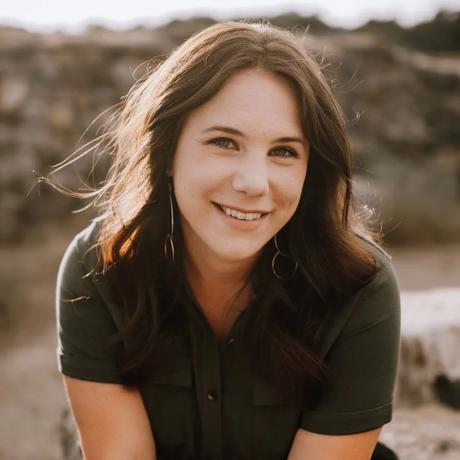

What we help with
Nobody walks in with a diagnosis.
They walk in with a question they've been turning over for a while. If one of these is yours, you're in the right place. If it's close but not quite, call anyway. We'll tell you.


- 01Why can't I relax when everything is fine?Anxiety and stress
- 02Why is good never good enough?Perfectionism
- 03Who am I after the divorce, the move, the last kid leaving?Life transitions
- 04Was it bad enough to count as trauma?Trauma and PTSD
- 05Why do I keep ending up in the same argument?Relationships and self-worth
- 06Why does everything feel so heavy?Depression
- How we work
- 07EMDR therapyA way through a memory without retelling every detail
- 08EMDR intensivesConsecutive days with Sarah, alongside your own therapist
- 09Sand tray therapyA scene built with miniatures. It says what words can't yet
- 10Mindfulness skills groupEight weeks online with Lora
Who it's for
Adults who are good at holding it together.
Most of our clients run teams, households, or both. They are the person other people lean on. They come in when the thing that always worked stops working: a divorce, a new role, menopause, a quiet house, or a memory that won't stay filed.
Many of them say some version of "I should be able to handle this." You probably can. It's easier with someone in the room.
What we do
Depth work, with tools that have evidence behind them.
- EMDRSarah, Evergreen certified
- Psychodynamic therapyDenver Institute for Psychoanalysis
- Attachment-based and humanistic workLora
- Sand traySarah
- Mindfulness skillsLora, group and individual
- Trauma-focused CBTwhen it fits
What it costs
In network with most of the big plans in Colorado.
- Lora Hope, LSW$130 / 45 min · $170 / 60
- Sarah Freeze, LCSW$190 / 45 min · $250 / 60
- Mindfulness group$275 for eight weeks
- EMDR intensivequoted on the call
Kaiser, UnitedHealthcare, Oxford, Optum, Oscar, Surest, UMR, UHC Student Resources, Colorado Medicaid. Anything else, you get a superbill. If money is the obstacle, say so on the call.
The therapists
Two of us. You'll know which one you're seeing.
Lora works with women whose lives look put-together from the outside and feel like too much from the inside. They find her in the middle of a change: a divorce, a career move, menopause, the months after the last kid leaves. The work is closing the distance between "everything's fine" and what's actually going on.
Humanistic, psychodynamic, attachment-based, with mindfulness skills alongside. MSW from Fordham, LSW in Colorado, practicing under Sarah's clinical supervision and completing EMDR training.

Sarah opened this practice and still runs it. For years it went by her name; she renamed it Curio when it stopped being only her. She specializes in EMDR and in adults who were abused or neglected as children, supervises every case here, and trains other therapists in EMDR.
Her weekly caseload is full. She sees people for EMDR intensives. Hunter College MSW, the two-year Adult Psychodynamic Training Program at the Denver Institute for Psychoanalysis, licensed in Colorado and New York.
Your first month
What actually happens.
- A fifteen-minute phone call.
You tell us what's going on. We tell you honestly whether Curio fits, and if not, who to call. No forms until you decide.
- A first session that is mostly listening.
Sixty minutes. History, what you've tried, what you want to be different. You'll leave knowing how we'd approach it.
- Weekly, in person or by video.
Forty-five or sixty minutes. We pay attention to patterns and get curious about where they started. You can say when something isn't working.
- A check-in around week four.
Is it helping? What's shifting? Whether to add EMDR, sand tray, or the group. The plan is yours and it's allowed to change.
Questions
Things people ask before they call.
Do you take my insurance?
Probably. We're in network with Kaiser, UnitedHealthcare, Oxford, Optum, Oscar, Surest, UMR, UHC Student Resources, and Colorado Medicaid (CCHA and Colorado Access). For other plans you pay the session fee and we give you a superbill to send in.
Is this in person or online?
Both. The office is at 4704 Harlan St, Suite 440 in Denver. Video sessions work anywhere in Colorado, and plenty of people do a mix.
Why is the practice called Curio?
A curio is a small object worth a second look. That's the whole idea of the work: the pattern you keep not examining, picked up and turned over in good light. The practice went by Sarah's name for years. It became Curio when it stopped being only her.
Will I see Sarah or Lora?
For weekly therapy, Lora. Sarah's weekly caseload is full; she sees people for EMDR intensives and supervises Lora's work, so her thinking is in the room either way.
What is EMDR, in one paragraph?
Eye Movement Desensitization and Reprocessing. You hold a memory loosely in mind while following a back-and-forth cue, and the memory loses its charge. It stays a memory; it stops running the present. You don't have to retell every detail for it to work.
How long does therapy take?
Honest answer: it depends on what you bring. Some people come for a season around one change. Some stay a year or two and go deep. EMDR intensives compress months into a few days for the right person. We check in around week four and keep checking.
Start here
Fifteen minutes on the phone.
Tell us what's been going on. We'll tell you whether Curio is the right place, and if it isn't, who to call instead.
4704 Harlan St, Suite 440Denver, CO 80212
(720) 465-1253
sf@sarahfreezelcsw.com